Thème
USW · United State of World
Cours de Développement d'applications mobiles
DAHO Boiry
CODJA Gédéon
MAAMOUSSOU Siméon Céphas
ALIDOU MADOUGOU Jamal
Mme Limuse A. TIKPON
Année académique 2026-2027
Sommaire
| 1 | Résumé exécutif et vision du projet |
| 2 | Problèmes résolus |
| 3 | Fonctionnalités clés et spécifications |
| 4 | Exigences non fonctionnelles |
| 5 | Spécifications techniques |
| 6 | Parcours utilisateurs |
| 7 | Acteurs et cas d'utilisation |
| 8 | Modèle des données : diagramme de classes |
| 9 | Écrans de l'application |
| 10 | Points à valider |
| 11 | Architecture du backend |
Version 2. Elle reprend la première version du dossier et la complète : création de reels dans l'application, envoi des médias adapté aux connexions lentes, qualité des images, itinéraire confié à l'application de cartographie, cas d'utilisation, modèle des données et liste des écrans. Mise à jour du 22 octobre 2026 : connexion par e-mail ou Google, photo prise avec l'appareil du téléphone, vérification sans écran, envoi en deux temps, modèles de téléphone saisis par les membres, maquette cliquable de 61 écrans, architecture du backend (section 11).
Cahier des charges · 1
USW, pour United State of World, est une plateforme internationale participative qui fait office de banque de données photographique et touristique. Sa mission : mettre en valeur des paysages authentiques, notamment ceux de pays sous-représentés comme le Bénin, à travers les yeux de ses habitants et des voyageurs.
Le produit repose sur un contrat de confiance strict : l'interdiction absolue des photos et vidéos générées par intelligence artificielle, au profit de clichés et de reels réels pris au smartphone. L'application transforme une simple inspiration visuelle en une action concrète : d'une photo ou d'un reel, on passe en un geste à l'itinéraire qui mène au lieu exact de la prise de vue.
La promesse produit
Chaque image devient un point de départ : le voyageur voit un lieu réel, vérifie comment il a été capturé, puis lance la navigation vers l'endroit exact de la prise de vue.
L'authenticité n'est pas une option de modération : elle est au cœur du produit. Chaque photo et chaque reel publié porte trois informations de capture : le téléphone qui l'a pris, la date et le lieu. Elles viennent de la caméra USW, des métadonnées du fichier, ou de l'auteur quand le fichier ne les contient pas, et l'application dit toujours d'où elles viennent. Un fichier qui porte des signes de génération par IA est refusé. Ce principe différencie la plateforme des catalogues d'inspiration qui mélangent images réelles et images générées.
USW, United State of World : le monde comme un seul territoire, raconté par ceux qui le parcourent. À l'ouverture de l'application, le sigle USW s'écrit, puis chaque lettre s'élargit en son mot pour former United State of World.
Cahier des charges · 2
La plateforme répond à quatre frustrations identifiées dans l'expérience touristique actuelle.
| Problème | Conséquence | Réponse apportée |
|---|---|---|
| Le manque de visibilité touristique | Des paysages magnifiques, comme ceux du Bénin, sont absents ou mal répertoriés sur les grands catalogues d'inspiration mondiaux. | Une banque de photos et de reels organisée par lieu, avec un flux de découverte, un fil de reels, une recherche libre et des filtres par pays, ville, type de lieu et proximité. |
| La perte de confiance liée à l'IA | La prolifération d'images générées par IA fausse la perception du réel et induit les voyageurs en erreur. | Des informations de capture (téléphone, date, lieu) sur chaque contenu, lues dans le fichier ou inscrites par la caméra USW, le refus des fichiers qui portent des signes d'IA, et le badge « Capture vérifiée ». |
| La frustration de l'itinéraire inconnu | Il est souvent impossible de savoir où et comment se rendre précisément sur le lieu d'une photo trouvée en ligne. | Un bouton « Y aller » qui ouvre l'application de cartographie du téléphone sur les coordonnées GPS exactes de la prise de vue. |
| Publier avec une connexion faible | En 3G, un envoi de photo ou de vidéo est lent, coupe souvent et doit être recommencé : beaucoup renoncent à partager. | Un contrôle d'authenticité fait sur le téléphone avant tout envoi, puis un envoi par morceaux, reprenable et en arrière-plan. |
Positionnement
100 % réel. Aucune image ni vidéo générée par IA. Chaque contenu est rattaché à un appareil, un lieu et une date, puis rendu vérifiable par l'utilisateur.
Cahier des charges · 3
Les fonctionnalités couvrent la chaîne complète : capturer, vérifier, envoyer, explorer, se rendre sur place et interagir. Les numéros UC renvoient aux cas d'utilisation de la section 7.
Chaque contenu publié porte trois informations de capture : le téléphone qui l'a pris, la date et le lieu. Elles ont trois origines possibles, et l'application dit toujours laquelle.
| Origine | Quand | Ce qui se passe |
|---|---|---|
| L'appareil photo du téléphone | Le membre touche « Prendre une photo » (UC11) : USW ouvre l'appareil photo du téléphone, avec tous ses modes (portrait, nuit, Pro) et sa pleine résolution. | Une seule fois, il autorise la position et la lecture du modèle du téléphone. Au retour, USW lit le fichier (modèle, date, GPS), vérifie que la prise vient d'avoir lieu et que le modèle est bien celui du téléphone, et ajoute la position si le fichier ne la porte pas. Rien n'est demandé au membre. |
| Les métadonnées du fichier | Le membre importe une photo de sa galerie (UC12), même ancienne. | USW lit sur le téléphone, sans rien envoyer, ce que le fichier contient : le modèle exact du téléphone (ex. : iPhone 14 Pro, Tecno Camon 20), les coordonnées GPS et la date de capture (UC13), et remplit le formulaire tout seul. |
| L'auteur | Le fichier importé ne contient pas l'une de ces informations. | Le membre la complète (UC27) : il tape le modèle de son téléphone et le choisit parmi les modèles déjà vus sur USW ; s'il n'y est pas, il l'ajoute, et le modèle rejoint la liste pour les suivants (celui qu'il tient en main reste proposé d'un appui). Il donne la date et indique le lieu en le cherchant ou en posant une épingle sur une carte. |
| Badge « Capture vérifiée » | Le téléphone et le lieu viennent des métadonnées du fichier (photo de l'appareil du téléphone ou de la galerie) ou de la caméra USW (reels). |
| Badge « Informations déclarées » | Au moins l'un des deux a été complété par l'auteur. Le contenu est publié, mais le badge le dit, et le lieu porte la mention « indiqué par l'auteur ». |
| Garantie non-IA | Rien n'est refusé parce qu'une information manque. Est refusé un fichier qui porte des signes de génération par IA : un logiciel de génération inscrit dans ses métadonnées, une marque de provenance qui le déclare généré (UC14). Le refus est immédiat, expliqué en langage courant, et ne coûte aucune donnée mobile ; le membre peut demander une vérification par l'équipe. |
| Sans écran de vérification | La lecture du fichier et la recherche des signes d'IA se font en arrière-plan : le membre passe directement aux détails de la publication, les informations déjà rangées. Un écran n'apparaît que s'il y a un problème : une information manque (compléter) ou la publication est refusée. |
| Cohérence | Des informations incohérentes (un modèle de téléphone qui n'existait pas à la date annoncée, par exemple) envoient le contenu à la file de validation humaine. Le serveur relit aussi les métadonnées du fichier reçu. |
| Lieu | Les coordonnées sont rapprochées d'un lieu (nom, ville, pays, type de lieu) que le membre peut renommer s'il est mal nommé. Des coordonnées venues du fichier ne se modifient pas. |
| Critère d'acceptation | Un contenu est publié quand il a un téléphone, une date et un point précis, et qu'il ne porte aucun signe d'IA. « Y aller » fonctionne donc toujours. |
| Format | Vidéo courte verticale (9:16), de 15 à 60 secondes, lue automatiquement en mode muet dans les fils. |
| Tournage par séquences | Caméra USW plein écran, réglages par défaut, sans filtre (UC18) : on choisit la durée (15, 30 ou 60 s), on appuie pour filmer une séquence, on relâche pour s'arrêter, on recommence. Une barre montre les séquences déjà filmées et le temps restant. Minuterie, retournement de la caméra, flash. |
| Montage | Une frise des séquences (UC19) : couper le début ou la fin, réordonner, supprimer une séquence, ajouter un texte, garder le son d'origine, enregistrer une voix off ou choisir une musique libre de droits. |
| Import | Une vidéo de la galerie, même ancienne, peut aussi être montée et publiée (UC12, UC19). |
| Fidèle au réel | Pas de filtre beauté, pas d'effet ni de décor générés par IA, pas de changement de voix. Le montage arrange l'ordre et la durée, il ne transforme pas l'image. |
| Informations de capture | Un reel tourné avec la caméra USW reçoit au moment même du tournage le modèle du téléphone, les coordonnées GPS et la date : c'est la source la plus sûre. Une vidéo importée est lue sur ses métadonnées (fabricant, modèle, lieu, date de création) ; ce qui manque est complété par l'auteur, comme pour les photos (3.1). |
| Badge de capture | Chaque reel affiche le modèle du téléphone et le lieu de tournage, sous le badge « Capture vérifiée » ou « Informations déclarées ». |
Deux exigences guident l'envoi : publier doit être facile, rapide et fluide même en 3G, et la plateforme doit offrir la meilleure qualité d'image.
| Contrôle avant envoi | Les informations de capture sont lues et complétées sur le téléphone (3.1), sans écran : un fichier qui porte des signes d'IA n'est jamais envoyé. |
| Envoi en deux temps | En 3G, le téléphone envoie d'abord une version légère de la photo (WebP de 2 160 px, environ 400 Ko, sans les informations du fichier) : le contenu peut paraître vite. L'original suit, par morceaux, de préférence en Wi-Fi ; le membre peut aussi l'envoyer tout de suite. |
| Envoi par morceaux | Le fichier part en morceaux de 256 Ko en 3G à 2 Mo en Wi-Fi, réglés selon le débit mesuré (UC15). Chaque morceau reçu est acquis. |
| Reprise automatique | Une coupure de réseau, la mise en arrière-plan ou le redémarrage du téléphone ne fait rien perdre : l'envoi repart du dernier morceau reçu dès que le réseau revient. |
| Déjà reçu | Une empreinte du fichier (SHA-256) permet au serveur de reconnaître un fichier déjà reçu, ou en partie reçu, et de ne pas le redemander. |
| En arrière-plan | Le membre continue à naviguer pendant l'envoi. Une pastille montre la progression ; l'écran « Mes envois » permet de mettre en pause, reprendre ou annuler (UC17). |
| Original intact | Le fichier n'est pas recompressé sur le téléphone : c'est l'original qui part, pour que la plateforme garde toute sa qualité. |
| Versions WebP | À l'arrivée, le serveur garde l'original tel quel et fabrique les versions d'affichage (UC16) : aperçu flou de 32 px, miniature de 480 px, version de flux de 1 080 px et version plein écran de 2 160 px, en WebP de qualité haute, en sRGB et sans les informations du fichier. Pour un reel : une affiche WebP, une vidéo légère en 480p et une vidéo HD en 720p ou 1080p. |
| Affichage adapté | L'application choisit la version selon la taille de l'écran et le réseau : version de flux en 3G, plein écran en Wi-Fi. Pendant le chargement : la couleur dominante, puis l'aperçu flou, puis l'image nette ; jamais de case vide. |
| Téléchargement de l'original | « Télécharger l'original » donne le fichier d'origine, dans son format (JPEG, HEIC, PNG, MP4, MOV) et sa résolution d'origine (UC24). Le format, la résolution et le poids sont annoncés avant de lancer ; en 3G, la durée est estimée et le membre peut attendre le Wi-Fi. Une « taille écran » légère est aussi proposée. |
| Mise en ligne | Le contenu passe en ligne quand sa version légère est reçue et vérifiée ; l'original le complète dès qu'il arrive. Le membre est prévenu par une notification. |
| Accueil en mosaïque | À l'ouverture, une mosaïque de piles de photos : une pile par lieu, dont les photos défilent l'une après l'autre (UC20). Toucher une pile ouvre la page du lieu, avec toutes ses photos et ses reels. La découverte se fait par le contenu, et non par une liste de pays. |
| Fil de reels | Un fil vertical plein écran, comme TikTok : on glisse vers le haut pour passer au reel suivant (UC25). |
| Trois flux | Découverte (tout USW), Abonnements (les créateurs suivis) et Près de moi (autour de la position du téléphone, UC31). |
| Recherche libre | Une loupe en haut de l'Accueil ouvre un champ unique (UC26) : il cherche dans les lieux (nom, ville, pays), les contenus (légendes, mots-clés) et les créateurs. Les résultats se rangent en trois onglets ; les recherches récentes sont proposées ; les filtres de lieu s'appliquent aussi aux résultats. |
| Filtres de lieu | Pays, ville, type de lieu (nature, plage, patrimoine, ville, marché, lieu de culte, loisirs) et rayon de proximité s'appliquent aux flux et à la recherche (UC21). « Par pays » n'est pas une classification d'accueil. |
| Lieu de capture | Chaque contenu affiche le lieu exact de la prise de vue : nom du lieu, ville, coordonnées, et leur origine, GPS du fichier ou indiqué par l'auteur (UC22). |
| Affichage transparent | Chaque contenu affiche le modèle du téléphone qui l'a capturé et la date, renforçant le positionnement « 100 % réel ». |
| Carte des reels | Une carte interactive pose chaque contenu sur son lieu, en vignette ; les contenus proches se regroupent en un chiffre (UC23). C'est une carte de découverte, pas un itinéraire : son bouton « Y aller » ouvre l'application de cartographie (3.5). |
| Bouton « Y aller » | Présent sur chaque photo, chaque reel, chaque pastille de la carte et chaque lieu trouvé par la recherche (UC30). |
| Navigation externe | USW n'affiche ni trajet ni guidage. Le bouton envoie les coordonnées du point de prise de vue et le nom du lieu à l'application de cartographie installée (Google Maps, Maps, Waze), qui calcule l'itinéraire depuis la position du voyageur et le guide jusqu'au point exact. |
| Plusieurs applications | Si plusieurs applications de cartographie sont installées, c'est le sélecteur du système qui propose le choix. |
| Sans position | USW n'a pas besoin de la position du voyageur pour l'itinéraire : l'application de cartographie la prend elle-même. |
| J'aime et réactions | Un double appui sur un contenu l'aime ; un appui long sur le cœur propose quatre réactions rapides : J'aime, Waou, Envie d'y aller, Merci (UC40). Le compteur ouvre la liste de ceux qui ont réagi, par type de réaction. |
| Commentaires | Chaque contenu a son espace de commentaires : réponses imbriquées, mentions d'utilisateurs avec @ (UC41). Le créateur peut épingler un commentaire (UC47), en masquer ou en supprimer sur ses contenus (UC48). |
| Suivre | On s'abonne à un créateur depuis son profil ou directement depuis un reel (UC45) ; ses publications alimentent le flux Abonnements. |
| Partage | Envoi direct à un membre, partage par WhatsApp, par message, par e-mail, par la feuille de partage du téléphone ou par un lien court copié, qui ouvre le contenu même sans l'application (UC42). Pour un reel, la même feuille propose aussi Télécharger, Enregistrer, Pas intéressé et Signaler. |
| Collections | Enregistrer un contenu dans une collection personnelle, publique ou secrète ; créer, renommer, supprimer ses collections (UC43, UC44). |
| Notifications | Réactions, commentaires, réponses, mentions, nouveaux abonnés, contenu mis en ligne ou refusé (UC46). |
| Signalement | Un contenu ou un commentaire se signale avec un motif : image générée par IA, pas pris à cet endroit, pas son auteur, contenu choquant, harcèlement, spam (UC50). Le signalement est anonyme ; la réponse arrive sous 24 h. |
| Blocage | Un membre peut bloquer un utilisateur : ils ne se voient plus (UC51). |
| Règles communautaires | Consultables par tous, y compris sans compte (UC52). |
| File de validation humaine | Les contenus douteux, les signalements et les demandes de vérification arrivent dans une file, les plus urgents d'abord ; le reste est publié sans attendre. Le modérateur voit le score de signes d'IA, ses raisons et le fichier comparé à ce que l'auteur a déclaré, puis publie ou refuse avec un motif (UC53, UC54). |
Cahier des charges · 4
| Exigence | Attendu |
|---|---|
| Connexions lentes | L'application reste utilisable en 3G : premier écran affiché en moins de 3 secondes, images de flux légères, envoi reprenable, aucune action perdue à cause d'une coupure. |
| Qualité d'image | Les versions plein écran sont en WebP de qualité haute, jusqu'à 2048 px ; l'original est conservé sans perte. |
| Fluidité | Défilement et animations à 60 images par seconde sur un téléphone de milieu de gamme. Les animations suivent une charte de mouvement commune (entrées de texte, transitions entre écrans, réponse au toucher) et s'effacent quand le réglage « réduire les animations » est activé. |
| Formats d'écran | Téléphone et tablette, en portrait ; Android et iOS. |
| Ergonomie | Une action principale par écran, des messages d'erreur en langage courant, toute action réversible (annuler, retirer), zones tactiles d'au moins 44 points. |
| Accessibilité | Contrastes suffisants, textes agrandissables, libellés lus par les lecteurs d'écran. |
| Confidentialité | La lecture des métadonnées se fait sur le téléphone. Les coordonnées publiées sont celles de la prise de vue, jamais la position en direct du membre. Les versions d'affichage ne contiennent aucune information du fichier ; seul l'original les garde. Mots de passe chiffrés, échanges en HTTPS. La page du mot de passe ne montre ni le nom ni la photo du compte, pour ne pas révéler qui est inscrit. |
| Langue | Français d'abord ; textes de l'interface regroupés pour être traduits. |
Cahier des charges · 5
L'interface mobile est développée avec le framework Flutter (langage Dart). Le backend repose sur Laravel, qui expose les services consommés par l'application.
| Composant | Choix technique | Rôle |
|---|---|---|
| Backend / API | Laravel (PHP) | API REST, authentification, contenus, interactions, modération. |
| Interface mobile | Flutter / Dart | Base commune pour Android et iOS, téléphone et tablette. |
| Architecture | Modulaire par fonctionnalités | Isoler chaque domaine : dépôt, reels, envoi, exploration, itinéraire, communauté, modération. |
| Gestion d'état | Riverpod ou BLoC | Séparer strictement la logique métier des écrans. |
| Connexion | google_sign_in, Laravel Sanctum | Connexion par e-mail et mot de passe, ou avec un compte Google : l'API vérifie le jeton d'identité Google, puis remet un jeton Sanctum. |
| Accès aux médias | image_picker, camera | Ouvrir l'appareil photo du téléphone (sans réduire la taille ni la qualité, pour garder l'original et ses métadonnées) et la galerie ; caméra plein écran pour tourner les reels par séquences. |
| Extraction de données | native_exif | Lire les métadonnées EXIF localement sur le téléphone et pré-remplir le formulaire. |
| Modèle du téléphone | device_info_plus | Lire, avec l'autorisation du membre, le modèle du téléphone : le comparer à celui du fichier, et le proposer d'un appui quand le fichier ne le dit pas. |
| Position | geolocator | Position du téléphone pour Près de moi et le filtre de proximité ; coordonnées inscrites au tournage d'un reel. |
| Envoi reprenable | Protocole d'envoi par morceaux de type tus | Envoi par morceaux, reprise après coupure, envoi en arrière-plan. |
| Traitement des images | File de tâches Laravel, libvips ou Imagick | Fabriquer les versions WebP (480, 1 080 et 2 160 px) ; relire les métadonnées côté serveur. |
| Traitement des vidéos | FFmpeg | Assembler les séquences, fabriquer les versions 480p et HD et l'affiche. |
| Lecture vidéo | video_player | Lecture muette automatique dans les fils. |
| Partage | share_plus | WhatsApp et feuille de partage du téléphone. |
| Lancement de la navigation | url_launcher | Ouvrir l'application de cartographie sur les coordonnées de la prise de vue. |
Principe d'architecture
L'interface Flutter s'appuie sur le backend Laravel pour les comptes, les publications et les données partagées. La lecture des métadonnées reste locale au téléphone, l'envoi des médias se fait par morceaux reprenables, les versions d'affichage sont fabriquées sur le serveur, et la navigation est déléguée aux applications de cartographie installées par l'utilisateur.
Cette organisation permet de faire évoluer séparément l'interface, le backend, le dépôt de contenus, la création de reels, le moteur d'envoi, l'itinéraire et les fonctionnalités communautaires, sans remettre en cause l'ensemble de l'application.
Cahier des charges · 6
Cinq parcours structurent l'expérience : contribuer, créer un reel, voyager, interagir et modérer.
Cahier des charges · 7
| Acteur | Rôle | Hérite de |
|---|---|---|
| Visiteur | Ouvre l'application sans compte : regarde la mosaïque, les reels et la carte, peut lancer « Y aller ». | |
| Membre | A un compte : publie, crée des reels, réagit, commente, suit, enregistre, télécharge, signale. | Visiteur |
| Créateur | Le membre auteur d'un contenu : épingle et modère les commentaires de ce contenu. | Membre |
| Modérateur | Traite la file de validation humaine et les signalements. | Membre |
| Application de cartographie | Reçoit la destination, calcule et guide l'itinéraire. | système |
| GPS du téléphone | Donne la position pour Près de moi et le filtre de proximité. | système |
| Messagerie | WhatsApp et la feuille de partage du téléphone. | système |
Le contributeur et le voyageur des parcours ne sont pas deux acteurs : c'est le même membre, dans deux rôles.
| N° | Cas d'utilisation | Acteur | Section |
|---|---|---|---|
| UC01 | S'inscrire | Visiteur | 5 |
| UC02 | Se connecter | Visiteur | 5 |
| UC03 | Gérer son profil | Membre | |
| UC10 | Publier un contenu (photo ou reel) | Membre | 3.1, 3.2 |
| UC11 | Prendre une photo avec l'appareil du téléphone | Membre | 3.1 |
| UC12 | Importer depuis la galerie | Membre | 3.1, 3.2 |
| UC13 | Extraire les métadonnées sur le téléphone et pré-remplir | système | 3.1 |
| UC14 | Vérifier l'authenticité : signes d'IA, cohérence, badge | système | 3.1 |
| UC27 | Compléter les informations manquantes : téléphone, date, lieu | Membre | 3.1 |
| UC15 | Envoyer le média par morceaux, avec reprise | système | 3.3 |
| UC16 | Préparer les versions WebP | système | 3.3 |
| UC17 | Suivre ses envois : pause, reprise, annulation | Membre | 3.3 |
| UC18 | Tourner un reel par séquences | Membre | 3.2 |
| UC19 | Monter le reel : couper, ordonner, texte, son | Membre | 3.2 |
| UC20 | Parcourir la mosaïque : Découverte, Abonnements, Près de moi | Visiteur | 3.4 |
| UC21 | Filtrer : pays, ville, type de lieu, proximité | Visiteur | 3.4 |
| UC22 | Consulter un contenu : lieu, appareil, date, badge | Visiteur | 3.4 |
| UC23 | Explorer la carte des reels | Visiteur | 3.4 |
| UC24 | Télécharger l'original | Membre | 3.3 |
| UC25 | Regarder les reels en fil vertical | Visiteur | 3.4 |
| UC26 | Rechercher : lieux, contenus, créateurs | Visiteur | 3.4 |
| UC30 | Lancer l'itinéraire « Y aller » | Visiteur | 3.5 |
| UC31 | Obtenir la position actuelle | système | 3.4 |
| UC40 | Aimer, réagir | Membre | 3.6 |
| UC41 | Commenter, répondre, mentionner | Membre | 3.6 |
| UC42 | Partager | Membre | 3.6 |
| UC43 | Enregistrer dans une collection | Membre | 3.6 |
| UC44 | Gérer ses collections | Membre | 3.6 |
| UC45 | S'abonner à un créateur | Membre | 3.6 |
| UC46 | Consulter ses notifications | Membre | 3.6 |
| UC47 | Épingler un commentaire | Créateur | 3.6 |
| UC48 | Modérer les commentaires de ses contenus | Créateur | 3.6 |
| UC50 | Signaler un contenu ou un commentaire | Membre | 3.7 |
| UC51 | Bloquer un utilisateur | Membre | 3.7 |
| UC52 | Consulter les règles communautaires | Visiteur | 3.7 |
| UC53 | Traiter la file de validation | Modérateur | 3.7 |
| UC54 | Traiter les signalements | Modérateur | 3.7 |
Les figures 1 à 5 présentent d'abord l'ensemble des acteurs et des modules, puis un diagramme par module, pour rester lisibles.
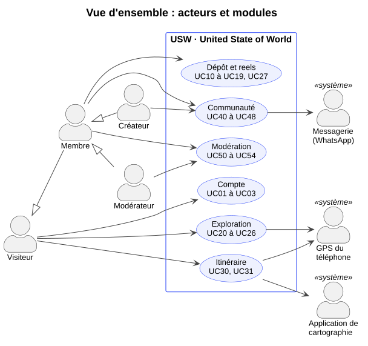
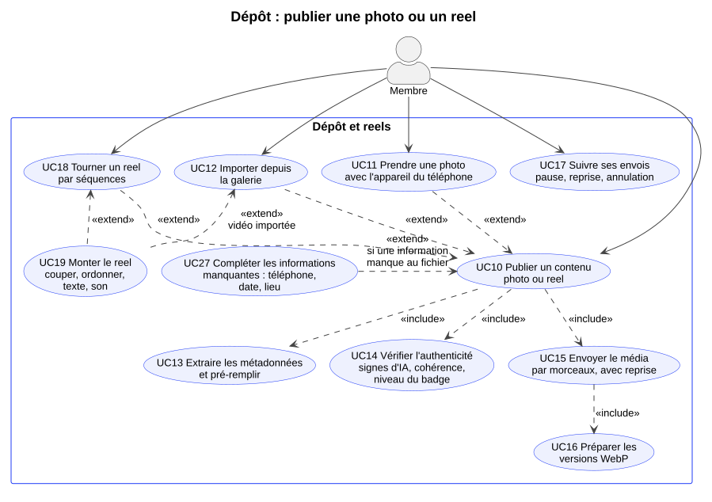
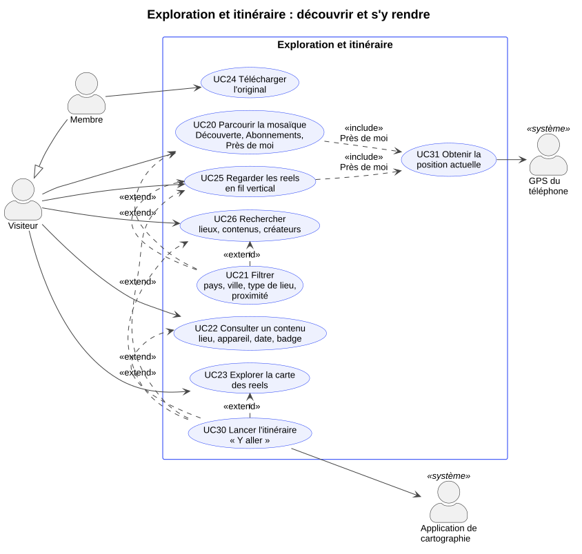
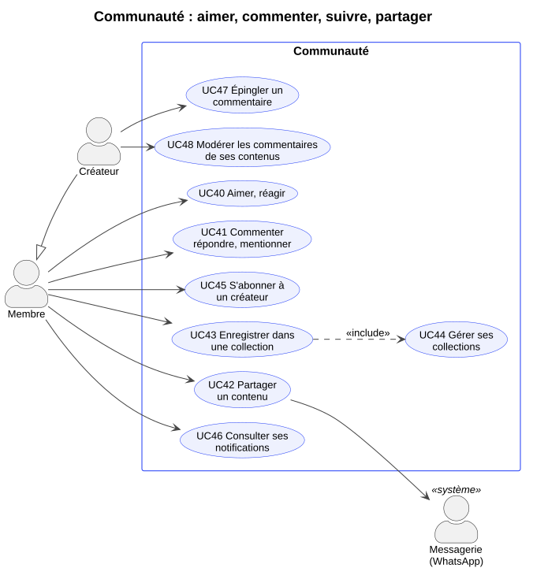
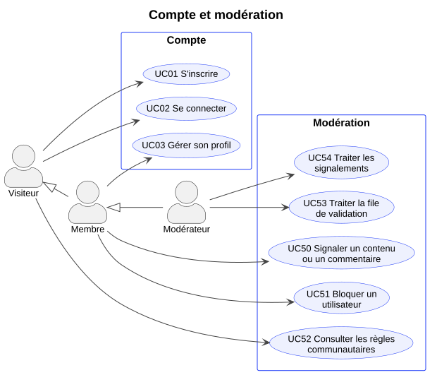
Cahier des charges · 8
Les classes du domaine, regroupées comme les modules de l'application. Le diagramme complet est en figure 6.
| Module | Classe | Rôle |
|---|---|---|
| Compte | Utilisateur | Le compte : identité, profil, rôle (membre ou modérateur). |
| Abonnement | Un membre suit un créateur. | |
| Blocage | Un membre en bloque un autre. | |
| Dépôt | Contenu (abstraite) | Ce qui est publié : légende, statut, date, vues, téléchargements. |
| Photo, Reel | Les deux sortes de contenu ; un reel dure de 15 à 60 s, a son d'origine ou une musique, un texte incrusté. | |
| Capture | Les informations de capture : source (appareil photo du téléphone, caméra USW pour un reel, ou galerie), modèle du téléphone, date, latitude, longitude, et pour chacune son origine. Elle dit si la capture est vérifiée et si le fichier porte des signes d'IA. | |
| OrigineInformation | D'où vient une information : métadonnées du fichier, caméra USW ou déclarée par l'auteur. | |
| ModeleTelephone | La liste des modèles de téléphone, tenue par les membres : un modèle absent est ajouté par le premier qui l'utilise. | |
| FichierOriginal | Le fichier reçu, gardé tel quel : format, dimensions, poids, empreinte SHA-256. | |
| Variante | Une version d'affichage : aperçu flou, miniature de 480 px, flux de 1 080 px, plein écran de 2 160 px (WebP) ; vidéo légère, vidéo HD, affiche. | |
| Envoi | Un envoi par morceaux : octets reçus, taille des morceaux, statut, reprise. | |
| PisteAudio | Une musique libre de droits de la bibliothèque. | |
| StatutContenu | En envoi, en analyse, publié, en file humaine, rejeté, retiré. | |
| Lieux | Pays, Ville, Lieu | Où le contenu a été pris : nom, type, coordonnées. |
| TypeLieu | Nature, plage, patrimoine, ville, marché, lieu de culte, loisirs. | |
| Exploration et itinéraire | FiltreFlux | Le flux choisi (Découverte, Abonnements, Près de moi) et ses filtres. |
| Recherche | Un texte cherché librement ; ses résultats en lieux, contenus et créateurs ; les recherches récentes du membre. | |
| Itineraire | La destination (coordonnées et nom du lieu) et le lien qui ouvre l'application de cartographie. | |
| Communauté | Reaction | J'aime, Waou, Envie d'y aller, Merci. |
| Commentaire | Texte, réponses imbriquées, mentions, épinglé, masqué. | |
| Collection, Enregistrement | Les collections d'un membre et les contenus qu'il y range. | |
| Notification | Ce qui est arrivé, pour qui, à propos de quel contenu, lue ou non. | |
| TypeNotification | Réaction, commentaire, réponse, mention, abonnement, contenu publié, contenu rejeté. | |
| Modération | Signalement | Un contenu ou un commentaire signalé, son motif et son statut. |
| DecisionModeration | La décision d'un modérateur sur un contenu, et son motif. | |
| RegleCommunautaire | Les règles affichées à tous. |
Ce que le modèle garantit
Un contenu porte toujours une capture (composition 1 à 1) : pas de publication sans téléphone, date et lieu, et l'origine de chacun reste connue. Il garde toujours son fichier original et au moins une variante : la qualité d'origine reste téléchargeable, l'affichage reste léger. L'itinéraire ne connaît que la destination : le trajet appartient à l'application de cartographie.
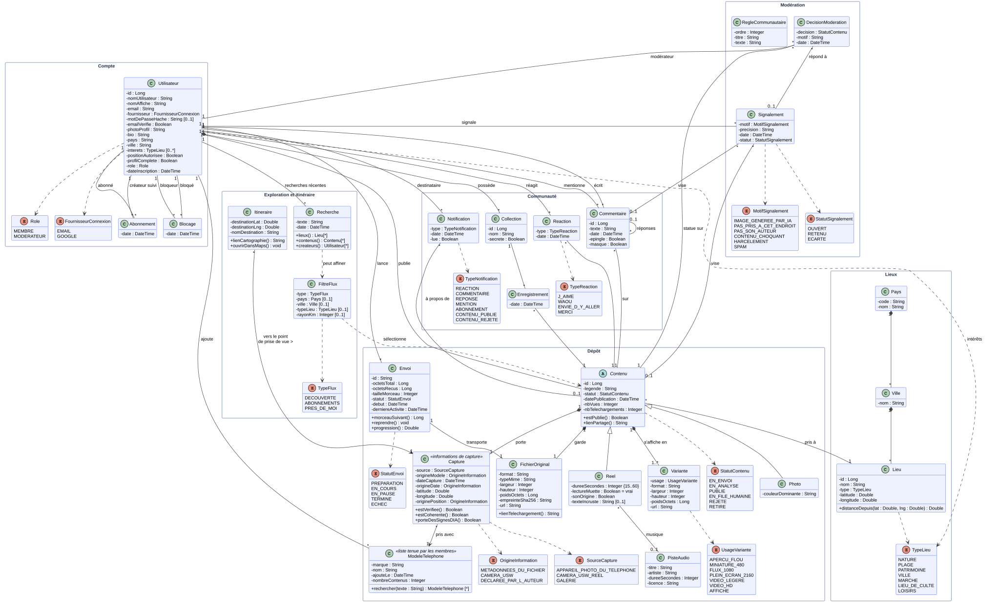
Cahier des charges · 9
Chaque écran existe en version téléphone et en version tablette. La barre d'onglets, à la manière d'Instagram, compte cinq entrées : Accueil, Reels, Créer, Carte et Profil ; en haut de l'Accueil, la loupe ouvre la recherche et la cloche les notifications.
| N° | Écran | Cas |
|---|---|---|
| E00 | Ouverture : « USW » s'écrit, puis chaque lettre s'élargit en son mot, l'un après l'autre | identité |
| E01 | Bienvenue, en trois pages : la promesse « 100 % réel », commencer ou explorer sans compte | UC01, UC02, UC52 |
| E02 | Entrée, comme Pinterest : continuer avec Google ou par e-mail ; mot de passe (sans nom ni photo du compte), créer le mot de passe, code reçu par e-mail, mot de passe oublié | UC01, UC02 |
| E03 | Accueil : piles de photos par lieu qui défilent ; Découverte, Abonnements, Près de moi ; l'en-tête se range quand on descend | UC20, UC31 |
| E04 | Filtres (feuille) : pays, ville, types de lieu, distance, captures vérifiées seulement | UC21 |
| E05 | Photo : badge, lieu, téléphone, date, Y aller, réactions, enregistrer, partager, télécharger | UC22, UC24, UC30, UC40, UC42, UC43 |
| E06 | Reels : fil vertical plein écran ; réagir (appui long sur le cœur), la liste des réactions | UC25, UC22, UC30, UC40, UC45 |
| E07 | Commentaires d'une photo ou d'un reel : épinglé par l'auteur, réponses, @mentions, moment cité | UC41, UC47, UC48 |
| E08 | Télécharger l'original, photo ou reel : résolution, poids, durée en 3G, attendre le Wi-Fi | UC24 |
| E09 | Enregistrer, photo ou reel : collections, secrètes marquées, en créer une | UC43, UC44 |
| E10 | Partager, photo ou reel : un membre, WhatsApp, lien court ; pour un reel, télécharger et signaler | UC42 |
| E11 | Carte des reels : vignettes posées sur leur lieu, groupes, aperçu, Y aller | UC23, UC30 |
| E12 | Créer : prendre une photo (appareil du téléphone), tourner un reel, importer ; rappel « pas d'IA » | UC10, UC11, UC12, UC18 |
| E13 | Lecture du fichier : sans écran, en arrière-plan | UC13, UC14 |
| E14 | Détails : légende, lieu trouvé, aperçu avec le badge | UC10 |
| E15 | Compléter, seulement s'il manque quelque chose : le téléphone tapé (choisi ou ajouté), la date, le lieu | UC27 |
| E16 | En route : l'envoi part en arrière-plan, une pastille suit la progression | UC15, UC16 |
| E17 | Notifications | UC46 |
| E18 | Mon profil : publications, reels, enregistrés | UC03, UC44 |
| E19 | Collection : couverture, secrète ou publique, renommer, partager | UC44 |
| E20 | Profil d'un créateur : s'abonner, partager, bloquer, signaler | UC45, UC50, UC51 |
| E21 | Modifier le profil ; réglages : données mobiles, autorisations, se déconnecter (en rouge) | UC03, UC51 |
| E22 | Signaler (feuille) : six motifs, précision, anonyme | UC50 |
| E23 | Règles communautaires : six règles avec un exemple accepté et un refusé, les sanctions | UC52 |
| E24 | Modération, la file : à vérifier, signalements, demandes, les plus urgents d'abord | UC53, UC54 |
| E25 | Modération, la décision : score d'IA, fichier comparé à la déclaration, motif, publier ou refuser | UC53, UC54 |
| E26 | Mes envois : en cours, en pause, en vérification | UC17 |
| E27 | Tourner un reel (caméra USW) : durée, séquences, minuterie | UC18 |
| E28 | Monter le reel : frise des séquences, couper, réordonner, texte | UC19 |
| E29 | Choisir un son : son d'origine, voix off, musiques libres de droits | UC19 |
| E30 | Indiquer le lieu : chercher le lieu ou poser une épingle sur la carte | UC27 |
| E31 | Recherche : champ libre, recherches récentes, onglets Lieux, Contenus, Créateurs | UC26, UC21, UC30 |
| E32 | Autorisations, une seule fois : position, modèle du téléphone, caméra et micro pour les reels | UC11, UC18 |
| E33 | Lieu : toutes les photos et reels d'un lieu, qui entrent au défilement ; Y aller | UC20, UC22, UC30 |
| E34 | Conditions générales d'utilisation | UC01, UC52 |
| E35 | Aide : sujets, questions fréquentes, écrire à l'équipe | UC52 |
| E36 | Compléter le profil à la première connexion, en trois étapes | UC01, UC03 |
| E37 | Messages et erreurs : champ en erreur, hors connexion, contenu introuvable, publication refusée, confirmation, bulle d'aide, message après une action, position désactivée, recherche vide | tous |
| E38 | Politique de confidentialité : en bref, données gardées et durée, vos droits | UC52 |
Chaque cas d'utilisation a au moins un écran, et chaque écran sert au moins un cas, à l'exception de l'ouverture, qui porte l'identité de l'application.
Maquette cliquable
Les 61 maquettes (les écrans et leurs variantes) sont réunies dans un fichier .god2, ouvert dans god2-design. En présentation, elles se parcourent comme un prototype : chaque bouton mène à son écran (632 liens), « Retour » revient en arrière, et un clic hors d'un lien montre en bleu les zones cliquables.
Cahier des charges · 10
Là où la première version du dossier ne tranchait pas, voici les choix retenus. Ils restent à confirmer par le groupe.
| # | Choix | Détail |
|---|---|---|
| 1 | On peut regarder sans compte | Le visiteur parcourt la mosaïque, les reels et la carte, et peut lancer « Y aller ». Publier, réagir, commenter, suivre et télécharger l'original demandent un compte. |
| 2 | Quatre réactions rapides | J'aime, Waou, Envie d'y aller, Merci. |
| 3 | Validation automatique, puis humaine | Rien n'est refusé pour une information manquante : l'auteur la complète. Un contenu cohérent est publié dès que ses versions sont prêtes ; un contenu douteux part dans la file humaine. |
| 4 | Modération dans l'application | Le modérateur est un membre avec un rôle de plus, et non un outil séparé. |
| 5 | Deux niveaux de badge | « Capture vérifiée » quand le téléphone et le lieu viennent du fichier ou de la caméra USW ; « Informations déclarées » quand l'auteur les a complétés. |
| 6 | Montage fidèle au réel | Couper, réordonner, texte, son d'origine, voix off, musique libre de droits ; ni filtre beauté, ni effet ou décor généré par IA, ni changement de voix. |
| 7 | Les signes d'IA | Sont refusés les fichiers dont les métadonnées nomment un logiciel de génération ou portent une marque de provenance qui les déclare générés ; les incohérences partent en file humaine. |
| 8 | Connexion par e-mail ou Google | Comme Pinterest. À la première connexion, le membre complète son profil (photo, nom, ville, lieux aimés). La page du mot de passe ne montre ni nom ni photo, pour ne pas révéler qui est inscrit. |
| 9 | L'appareil photo du téléphone | Les photos se prennent avec l'appareil du téléphone et tous ses modes ; la caméra USW ne sert qu'aux reels. Les modes gardés dépendent du fabricant : à tester sur le Tecno Camon 50 Pro. |
| 10 | Vérification sans écran | Rien n'arrête le membre quand tout va bien ; un écran n'apparaît qu'en cas de problème. |
| 11 | Envoi en deux temps | Une version légère d'abord, pour paraître vite en 3G ; l'original ensuite, de préférence en Wi-Fi. |
| 12 | Modèles de téléphone saisis | USW ne tient pas la liste de tous les téléphones : un modèle absent est ajouté par le premier membre qui l'utilise. Un modérateur peut fusionner les doublons. |
Cahier des charges · 11
L'architecture est fixée avant d'écrire le code. Elle suit la méthode du cours Projet d'initiation aux frameworks avec Laravel (IFRI, GL3) ; le détail est dans analyse/ARCHITECTURE.md.
| Sujet | Choix |
|---|---|
| Forme | Un monolithe modulaire Laravel 13 : Compte, Dépôt, Envoi, Lieux, Exploration, Communauté, Modération, Notifications. Comme Pinterest à ses débuts, on reste simple et l'on découpe seulement quand la charge l'impose. |
| Organisation | Contrôleurs fins ; validation dans des Form Requests ; logique dans des services et des actions ; autorisations dans des Policies ; réponses par des ressources JSON ; travail lent dans des jobs en file d'attente ; réactions par événements et écouteurs. |
| Données | MySQL 8.4, index spatiaux pour Près de moi et la carte ; identifiants publics ULID, non devinables ; Redis pour le cache, les files et les limites de débit ; médias sur un disque S3 compatible, servis par un CDN. |
| Authentification | Jetons Sanctum pour l'application mobile ; jeton d'identité Google vérifié par l'API ; code e-mail haché, valable 10 minutes ; 5 essais de mot de passe, puis une pause de 15 minutes. |
| Envoi | Par morceaux bruts, reprenable (inspiré de tus) ; déduplication par empreinte SHA-256 ; aperçu d'abord, original ensuite. |
| Accueil | Pagination par curseur, chargement anticipé (pas de N+1), pages gardées 60 secondes en cache. |
| Sécurité | PHP 8.5.12 au minimum depuis les failles php2shell (CVE-2026-109618 et CVE-2026-109619, 21 octobre 2026), exigé par Composer et vérifié au déploiement ; PHP-FPM derrière Nginx ; validation serveur, $fillable, Policies à chaque ressource, limites de débit, originaux privés servis par lien signé, versions d'affichage sans métadonnées. |
| Tests | PHPUnit : tests unitaires et feature tests, base recréée à chaque test, services extérieurs simulés. |
Comme dans le TP : on avance dans l'ordre et on teste chaque étape avant la suivante. Chaque lot suit le même chemin : migration, modèle, factory, Form Request, service, contrôleur, ressource, Policy, route, feature tests, puis contrôle sur le téléphone.
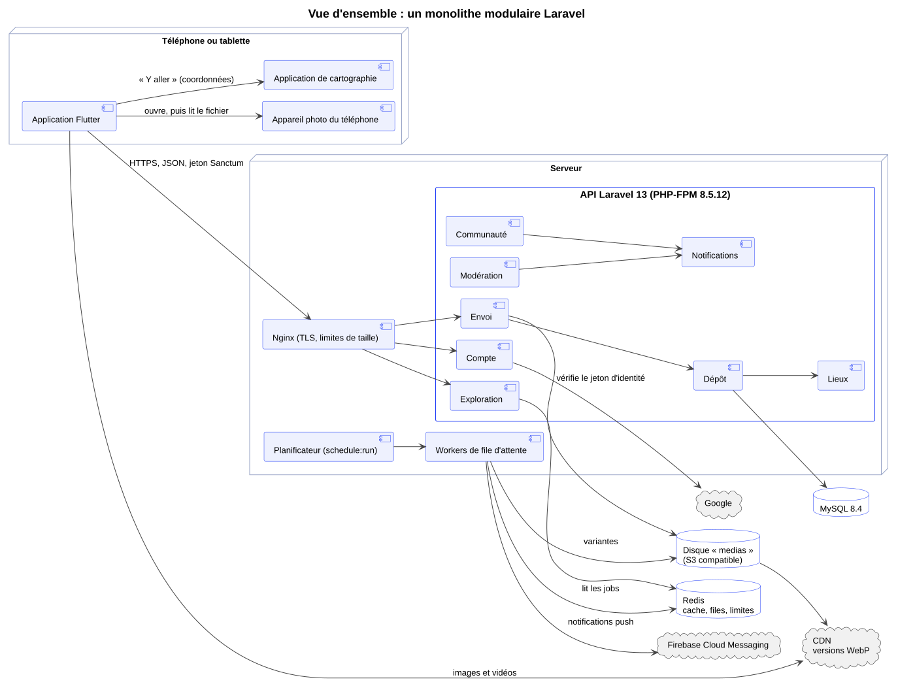
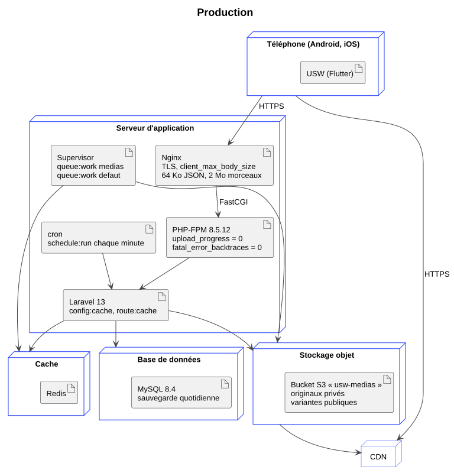
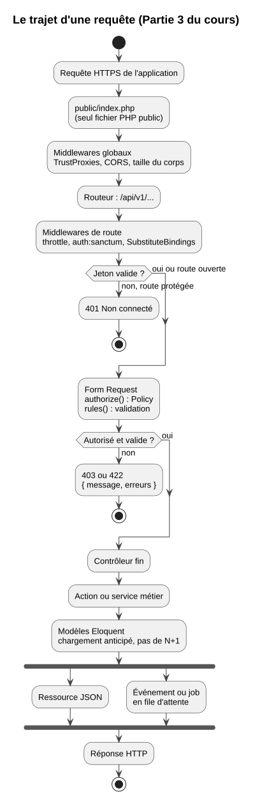
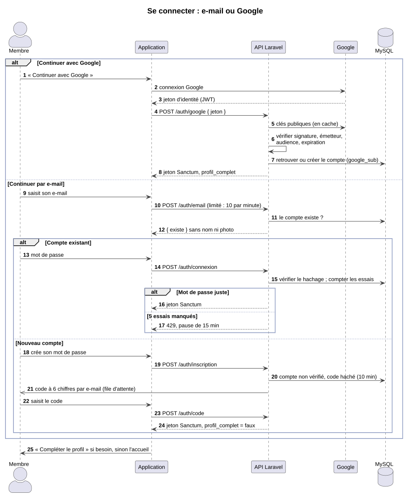
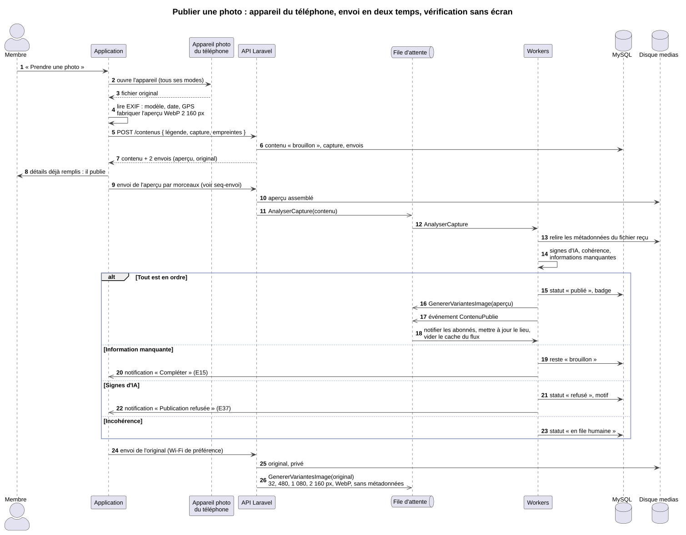
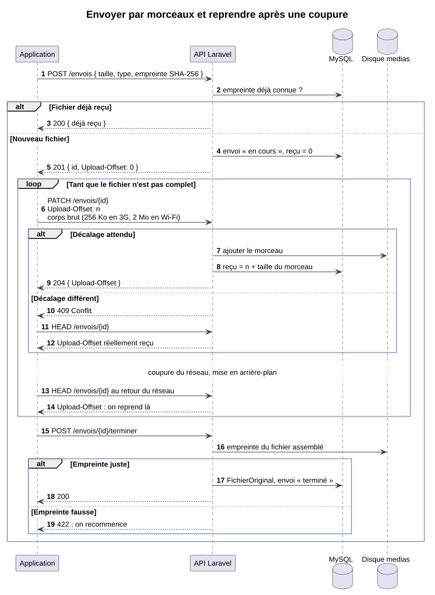
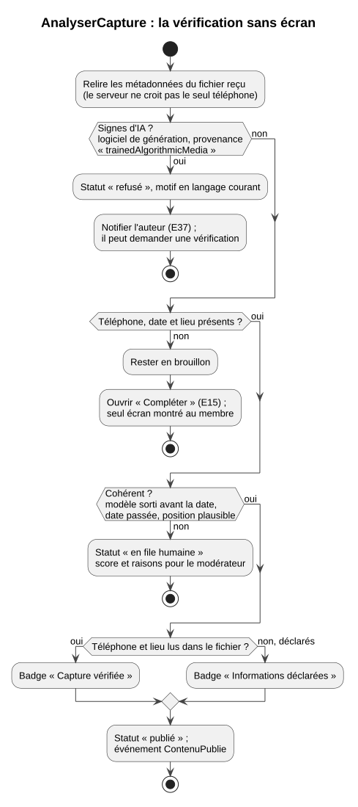
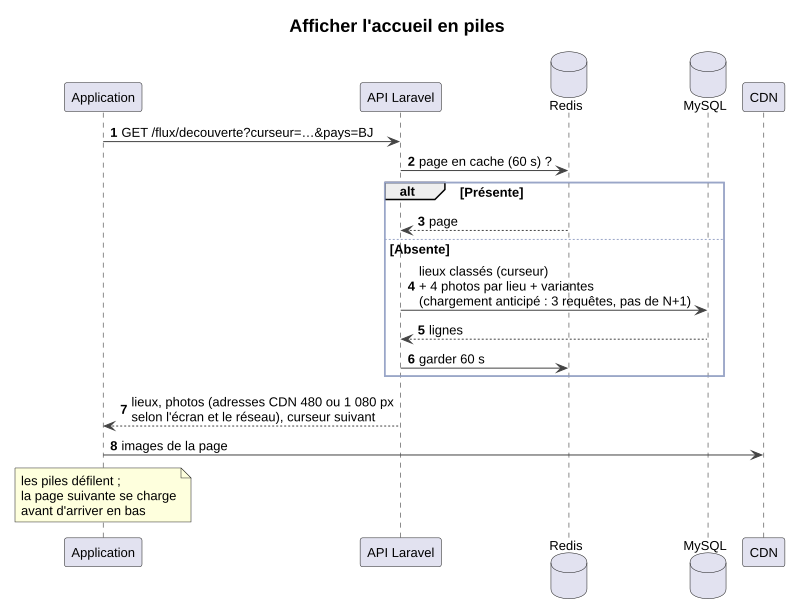
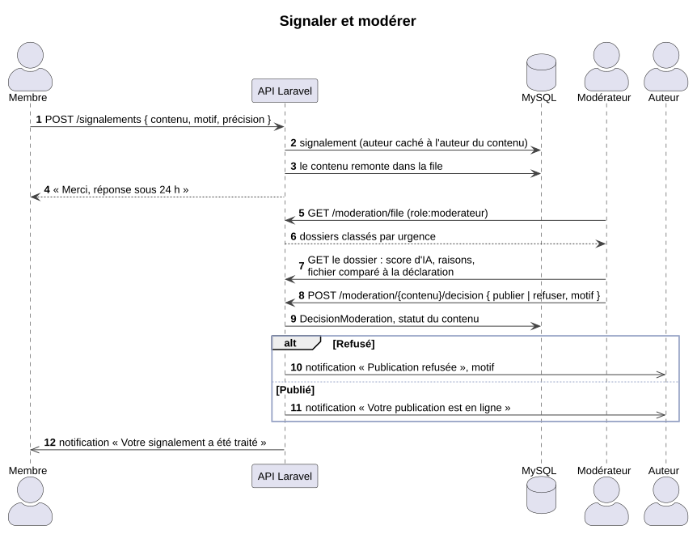
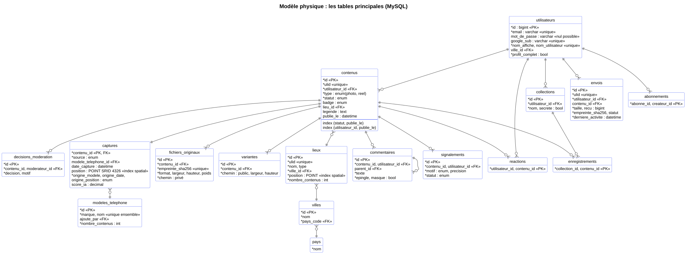